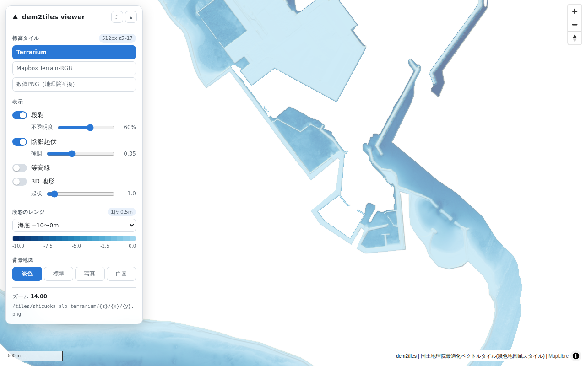
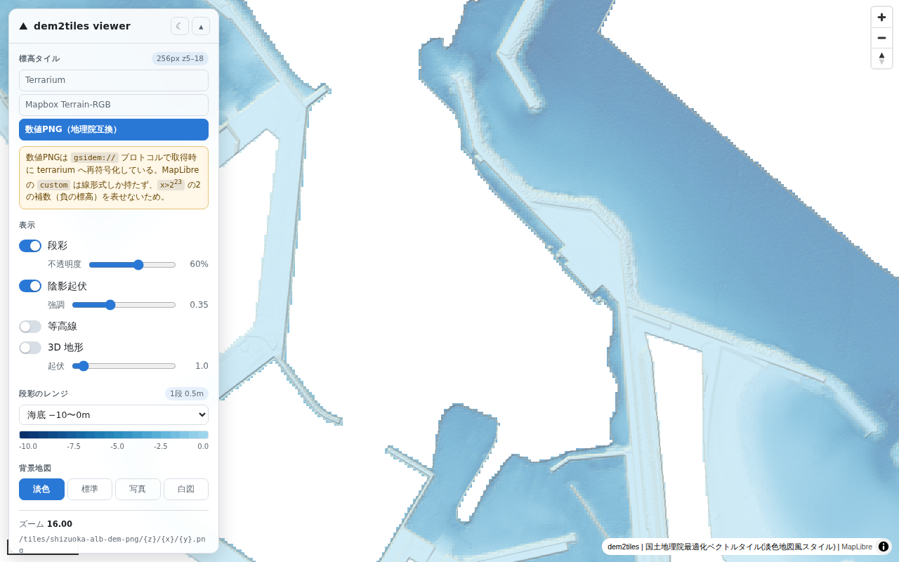
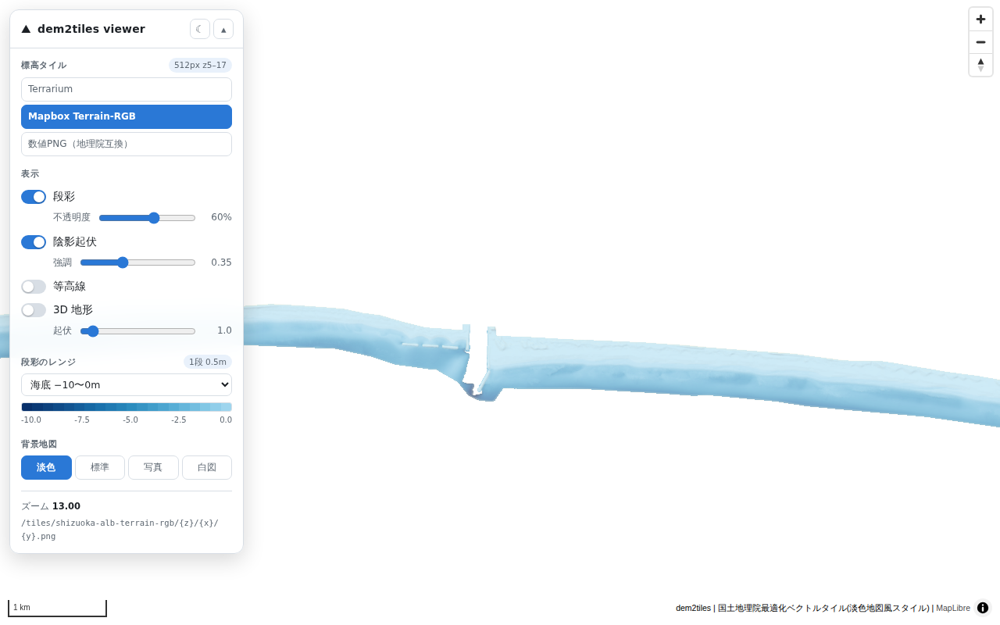
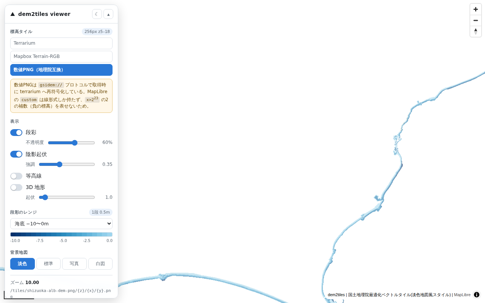

手順
1. データの取得と GeoTIFF 化
ダウンロード URL は配布ページのベクトルタイル（{z}/{x}/{y}.pbf）の属性 URL に入っている。grid2geotiff に同梱の URL 一覧（testdata/urllist-shizuoka-alb.txt、1,164 件）が、データセットの「ファイルリスト」（file_itiran_grd.txt、1,164 件）と完全一致することを確認したうえで使った。
$ python scripts/fetch_shizuoka_alb.py --list testdata/urllist-shizuoka-alb.txt --out data/raw -j 8
完了: data/raw 1164/1164 件 988 MB
$ grid2geotiff convert data/raw -o data/out --columns 1,2,3 -j 4
変換: 成功 1164 / 失敗 0 / 計 1164 # 43 秒、出力 124 MB| 入力の統計 | 値 |
|---|---|
| 座標系 | 1,164 件すべて EPSG:6676（図郭番号から判定） |
| 格子間隔 | 1,164 件すべて 0.5 m |
| 1/50000 図郭 | ND 115 / NE 206 / OB 84 / OC 270 / OD 267 / PC 22 / PD 200 |
| 欠損率 | 最小 0.00% / 中央 31.22% / 最大 95.66% |
| 標高 | -14.5 〜 124.4 m（有効セルの 69% が負値 = 水面下） |
| 有効セル | 246,456,840（61.6 km²） |
| 外接矩形 | 107.0 × 58.9 km |
外接矩形と有効面積は README の「1164 図郭、外接矩形 107 x 58.9 km、有効データ 61.6 km2」と一致する。
2. dem2tiles の実行
$ docker build -t dem2tiles .
$ docker run --rm -v $PWD/data/out:/input:ro -v $PWD/output:/output dem2tilesdocker build 内の git clone が CA を信頼できず失敗した。Dockerfile 本体には手を入れず、CA を追加したベースイメージ（scripts/Dockerfile.ca-base）を ubuntu:24.04 の代わりに FROM するだけの Dockerfile.ccr を作ってビルドした。dem2tiles 側の問題ではない。ログ全文（警告行を除く）は results/run1_full.log。
[dem2tiles] found 1164 GeoTIFF(s) under /input
[dem2tiles] source CRS: EPSG:6676, pixel size: 0.500000 m, centre latitude: 35.035738
[dem2tiles] RGB_MAX_ZOOM=auto -> 17 (512 px tiles)
[dem2tiles] GSIDEM_MAX_ZOOM=auto -> 18 (256 px tiles)
[dem2tiles] merging 1164 GeoTIFF(s)
[dem2tiles] reprojecting EPSG:6676 -> EPSG:4326
Creating output file that is 222948P x 101654L.
[dem2tiles] replacing nodata (-9999) with 0
[dem2tiles] building mapbox tiles (z5-17)
tile_driver: 3460 tile(s) intersect the inputs (z5-17)
[dem2tiles] building terrarium tiles (z5-17)
tile_driver: 3460 tile(s) intersect the inputs (z5-17)
[dem2tiles] building gsidem tiles (z5-18)
[dem2tiles] done結果
所要時間（4 vCPU、JOBS=4）
output/.state/ のマーカーの更新時刻から求めた。
| ステップ | 所要 | README の記載 |
|---|---|---|
| merge + 再投影（gdalwarp） | 218 s | 150 s |
| NoData 置換（gdal_calc） | 210 s | – |
| mapbox（rio-rgbify + mb-util） | 325 s | 5 分 |
| terrarium（rio-terrarium + mb-util） | 332 s | 5 分 |
| gsidem（gdal2NPtiles） | 510 s | – |
| 合計 | 1,595 s（26.6 分） |
再投影が README より遅いのは CPU 数の差（README の計測環境は JOBS=12 程度と推測）で、TILED=YES + SPARSE_OK=TRUE の効果（ストリップ型では 18 分で進まない）は再現できている。
出力の大きさと枚数
| 出力 | 枚数 | 容量 | README の記載 |
|---|---|---|---|
merged.tif | – | 585 MiB（613,365,978 B） | 613 MB |
merged_filled.tif | – | 585 MiB | – |
mapbox（z5–17、512 px） | 3,460 | 108 MiB | 3,460 枚 |
terrarium（z5–17、512 px） | 3,460 | 323 MiB | 3,460 枚 |
gsidem（z5–18、256 px） | 9,017 | 248 MiB | – |
| 3 形式合計 | 679 MiB（712 MB） | 715 MB |
ズーム別の枚数は results/tileset.json。mapbox と terrarium のタイル集合は全ズームで同一。mbtiles の tiles テーブルの行数（3,460）と展開ディレクトリの枚数も一致する。
merged.tif は 512×512 ブロック・DEFLATE・NoData -9999・Float32、画素 0.0000052636°（約 0.485 m）で README の説明どおり。
最大ズームの自動決定: 0.5 m グリッド・緯度 35.0° で RGB_MAX_ZOOM=17（512 px）、GSIDEM_MAX_ZOOM=18（256 px）。README の表（z17 512 px = 0.485 m/px、z18 256 px = 0.485 m/px）と一致する。出力 PNG のサイズも mapbox / terrarium が 512×512、gsidem が 256×256 の RGB だった。
復号の正しさ（merged.tif との比較）
scripts/decode_check.py。各形式・各ズームからタイルを 60 枚ランダムに選び、1 枚あたり 4,096 画素の中心座標で merged.tif（EPSG:4326）を最近傍参照して差をとった。
| 形式 | ズーム | 有効画素 | 平均 |d| | 99 パーセンタイル | 0.1 m 以内 | 0.5 m 以内 | 復号値の範囲 |
|---|---|---|---|---|---|---|---|
| mapbox | 17 | 126,881 | 0.029 m | 0.15 m | 98.0% | 99.8% | -8.3 〜 11.7 m |
| terrarium | 17 | 126,881 | 0.021 m | 0.14 m | 98.3% | 99.8% | -8.3 〜 11.7 m |
| gsidem | 18 | 139,889 | 0.022 m | 0.20 m | 97.3% | 99.8% | -9.4 〜 13.0 m |
| gsidem | 17 | 105,665 | 0.035 m | 0.35 m | 95.4% | 99.4% | -12.0 〜 68.2 m |
| mapbox | 13 | 15,665 | 0.159 m | 2.31 m | 73.4% | 93.8% | -12.9 〜 75.7 m |
| gsidem | 13 | 15,608 | 0.153 m | 1.83 m | 67.5% | 94.1% | -13.9 〜 69.5 m |
| terrarium | 10 | 254 | 0.873 m | 7.23 m | 23.6% | 61.8% | -7.3 〜 9.8 m |
符号化分解能は Terrain-RGB が 0.1 m、Terrarium が 1/256 m、数値 PNG が 0.01 m なので、「0.1 m 以内」が量子化誤差の目安になる。
z13 以下で差が広がるのは比較方法の限界で、欠陥ではない。z13 は 1 画素が約 8 m（元の 16×16 セル）を平均した値なのに対し、この検証は画素中心の 1 セルを最近傍で参照している。gdal2NPtiles は数値に戻してから average で縮小し、rio 系は bilinear で縮小するので、起伏のある場所ほど 1 セルの値との差が出る。低ズームでも復号値の範囲（-13.9 〜 75.7 m）が入力の範囲（-14.5 〜 124.4 m）に収まり、負値も保たれている。
無効値の対応:
- gsidem z18: merged.tif が NoData の 105,871 画素すべてがタイルでも無効値
x = 2^23。不一致 0 画素。 - mapbox / terrarium z17: merged.tif が NoData の 118,879 画素のうち 198 / 209 画素（0.17%）が FILL(0) でない。データ縁で bilinear が隣接する有効画素と混ざったもの（所見 2）。
復号の正しさ（再投影前の元 GeoTIFF との直接比較）
scripts/origin_check.py。merged.tif を経由せず、タイル画素中心を EPSG:6676 に変換して図郭 GeoTIFF の VRT を直接参照した。再投影・タイル化を含めた全工程の位置ずれを見る。
| 形式 | ズーム | 有効画素 | 平均 |d| | 平均バイアス | 0.1 m 以内 | 0.5 m 以内 |
|---|---|---|---|---|---|---|
| mapbox | 17 | 66,573 | 0.036 m | +0.001 m | 97.3% | 99.3% |
| terrarium | 17 | 66,573 | 0.044 m | -0.001 m | 94.0% | 99.3% |
| gsidem | 18 | 97,500 | 0.041 m | -0.005 m | 94.5% | 99.4% |
| gsidem | 15 | 36,331 | 0.093 m | -0.006 m | 79.2% | 97.5% |
平均バイアスがほぼ 0 なので、半画素ずれのような系統誤差はない。
大きな差の正体
scripts/slope_check.py。差が 0.1 m を超える画素について、元 DEM の 3×3 近傍の起伏（max − min）と比べた。差が局所起伏を超える画素だけが「リサンプリングでは説明できないずれ」になる。
| 形式 | ズーム | 内部画素 | |d| > 0.1 m | うち局所起伏を超える | 説明できない差の最大 | 局所起伏の中央値（差が大きい画素 / 全体） |
|---|---|---|---|---|---|---|
| mapbox | 17 | 38,460 | 1,326 | 1（0.003%） | 0.30 m | 1.40 m / 0.20 m |
| gsidem | 18 | 58,993 | 2,785 | 1（0.002%） | 0.22 m | 0.60 m / 0.20 m |
17/115791/52070 などの一覧は results/decode_worst_tiles.txt。再実行・部分再構築・検証の挙動
| 操作 | 結果 |
|---|---|
| 同じ設定で 2 回目（1,164 図郭） | 5 ステップすべて up to date, skipping、2.4 秒で終了（results/run2_skip.log） |
output/gsidem を消して再実行 | gsidem だけ再構築、他はスキップ |
RGB_MAX_ZOOM=16 | mapbox と terrarium だけ z5–16 で再構築、gsidem はスキップ |
mapbox.mbtiles だけ消す（マーカーは残る） | mapbox だけ再構築（マーカーだけでは「完了」とみなさない） |
FORCE=1 | 全ステップ再構築 |
OUTPUTS=gsidem | merged_filled.tif を作らず gsidem のみ生成 |
| EPSG:6676 2 件 + EPSG:6677 1 件を混ぜる | probe: inputs are in more than one CRS, refusing to merge で exit 1、merged.vrt を作らない（results/mixed_crs.log） |
部分再構築の 5 件は 1 図郭の出力で確認した（全量では 1 回 5〜9 分かかるため）。
viewer での目視確認
同梱の viewer/（MapLibre）を npm run dev で起動し、Playwright で 3 形式を切り替えて撮影した（scripts/viewer_screenshots.mjs）。背景地図（地理院最適化ベクトルタイル）は検証環境の Chromium が外部 CA を信頼できず読めていないため白地になっているが、標高タイルはローカル配信で問題なく描画される。




- 3 形式で段彩（海底 -10〜0 m）と陰影が同じ地形を描く。防波堤・航路・泊地の水深差が読める。
- 数値 PNG は viewer が
gsidem://で terrarium に再符号化して表示しており、負の標高が正しく出る。 - 3 形式のスクリーンショットは見分けがつかないほど同じ。RGB 系の FILL（0 m）はこの段彩レンジでは最上端＝ほぼ白になり、数値 PNG の無効値（透過）と同じ見た目になるため、この表示では FILL の影響は現れない（陸域を含むレンジや陰影の縁で現れる。所見 2）。
所見と提案
01図郭の外接矩形による列挙が、空タイルを 332 枚残す
tile_driver.py は各図郭 GeoTIFF の bounds からタイルを列挙する。ALB の図郭は海域側が大きく欠けている（欠損率の中央値 31%、最大 96%）ので、図郭の矩形には入るが有効画素が 1 つも届かないタイルが残る。
| ズーム | RGB 系タイル | うち全画素 FILL | 数値 PNG（NoData 保持）のタイル |
|---|---|---|---|
| 15 | 289 | 13 | 276 |
| 16 | 756 | 54 | 702 |
| 17 | 2,186 | 259 | 1,924 |
| 合計（z5–17） | 3,460 | 332（9.6%） | 3,128 |
容量への影響は小さい（空タイルは 1 枚 2 KB 弱、合計 0.6 MB）が、枚数と生成時間の 1 割が無駄になっている。README の「機械的に列挙すると 136,148 枚」からは十分に減っているので、これは残りの 1 割の話。
merged.tif は SPARSE_OK で NoData ブロックを持たないので、rasterio の block_windows で実ブロックの位置だけを拾えば、512 px ブロック単位のフットプリントが再投影後の座標で安価に得られる。これを mercantile.tiles に渡せば、gdal2NPtiles と同じ集合（z17 で 1,924 枚）に揃う。別案として、図郭ごとに dataset_mask() の有効範囲の外接矩形に縮めるだけでも、海域側が欠けた図郭では効く。02FILL_VALUE=0 は水深データでは「海面」と紛れる
Terrain-RGB / Terrarium は「値なし」を表せないので NoData を FILL_VALUE で埋めるしかない。既定の 0 は陸域 DEM では自然だが、ALB は有効セルの 69% が負値（海底）で、FILL の 0 m は周囲の海底（-5〜-14 m）より高い。段彩ではデータの無い海域が「浅い帯」に見え、陰影では FILL との境界が崖になる。
さらに、bilinear で再投影する前に置換するため（merged_filled.tif を作ってからタイル化）、データ縁の画素が 0 と混ざる。上の検証で RGB 系の NoData 画素の 0.17% が FILL 以外の値を持っていたのはこれで、逆に縁の有効画素も 0 側に引かれる。
- ALB のような水深を含むデータでは
FILL_VALUEをデータ範囲より低い値（例-100）にする運用を README に書く。viewer の段彩レンジで FILL を範囲外に落とせるようになる。 - RGB 系を
merged.tif（NoData 保持）からタイル化し、タイル化後に NoData 画素を FILL に置く。rio-rgbify / rio-terrarium はnodataを見ないので、tile_driver.pyで_encode_as_pngを差し替えて mask を見るのが一案。これなら縁の混色が消える。
03座標系のラベル: データは「日本測地系2024」、出力は EPSG:6676（JGD2011）
データセットの説明は「日本測地系2024／平面直角座標系第8系」だが、grid2geotiff は図郭番号から JGD2011 の EPSG:6676 を付与し、dem2tiles もそれを受ける。
測地成果2024 は測地系の定義を変えるものではなく、水平位置の数値は JGD2011 から引き継ぐ（国土地理院）。したがって EPSG:6676 で再投影しても位置はずれない。JGD2024 の EPSG コードは 2026 年 4 月の EPSG v12.055 で登録された（Qiita: EPSG に登録された JGD2024）が、イメージ内の GDAL 3.8.4 / PROJ はまだ持っていないため、当面は EPSG:6676 のままでよい。
--crs を探さずに済む。04ログの 4 分の 3 が警告と DEBUG
| 種類 | 行数 |
|---|---|
| 全体 | 27,711 |
rasterio NotGeoreferencedWarning（タイル 1 枚ごとに 2 行） | 6,920 |
mb-util の DEBUG: / INFO:（タイル 1 枚ごとに 2 行） | 13,844 |
前者は rio-rgbify / rio-terrarium が PNG を MemoryFile に書くときの警告で無害。後者は mb-util がログレベルを DEBUG に固定しているため。
docker_entrypoint.sh で export PYTHONWARNINGS="ignore::rasterio.errors.NotGeoreferencedWarning"（venv 側の python に効く）と、mb-util --silent（mbutil に --silent オプションがある）を付ける。これで進捗行だけが残り、docker logs が読めるようになる。05mbtiles の metadata が空
mapbox.mbtiles / terrarium.mbtiles の metadata は format=png, name="", description="", version=1, type=baselayer だけで、bounds / minzoom / maxzoom が無い。展開して配信するだけなら困らないが、mbtiles のまま tileserver-gl や PMTiles に渡すと範囲とズームを推定させることになる。
tile_driver.py は keep の集合を持っているので、生成後に metadata へ bounds（mercantile.bounds の合併）、minzoom、maxzoom、name（mapbox / terrarium）を書き足せる。数行で済む。06細かい点
probe.pyのcentre latitudeは先頭の 1 ファイルの中心緯度（35.036°）で、データ全体の中心（約 34.85°）ではない。ズームの決定には効かない（どちらでも z17 / z18）が、南北に長いデータでは端で 1 段ずれる可能性がある。probe.pyは全ファイルを開いているので、全体の bounds から求めるのが自然。RGB_MAX_ZOOMを明示したときRGB_MAX_ZOOM=auto ->の行が出ないので、ログからは何ズームで作ったか分からない。building mapbox tiles (z5-16)の行で分かるので実害はない。gsidemの中に gdal2NPtiles のビューア（leaflet.htmlなど 4 ファイル）が残る。README に書いてあるとおりだが、配信用にそのまま同期すると混ざる。
再現方法
# 1. データ
git clone https://github.com/shiwaku/grid2geotiff && pip install -e grid2geotiff
python grid2geotiff/scripts/fetch_shizuoka_alb.py \
--list grid2geotiff/testdata/urllist-shizuoka-alb.txt --out data/raw -j 8
grid2geotiff convert data/raw -o data/out --columns 1,2,3 -j 4
# 2. タイル
git clone https://github.com/shiwaku/dem2tiles && docker build -t dem2tiles dem2tiles
docker run --rm -v $PWD/data/out:/input:ro -v $PWD/output:/output dem2tiles
# 3. 検証（rasterio / numpy / pillow が要る）
python scripts/tileset_check.py output
python scripts/decode_check.py --output output --kind gsidem --zoom 18 --samples 60
gdalbuildvrt -input_file_list <(sed 's#^/input/#data/out/#' output/input_files.txt) src6676.vrt
python scripts/origin_check.py --output output --vrt src6676.vrt --kind mapbox --zoom 17
python scripts/slope_check.py output src6676.vrt mapbox 17 40ファイル
リポジトリ dem2tiles-verification/（ブランチ claude/keen-heisenberg-spitnf）に置いた。
| パス | 内容 |
|---|---|
| scripts/decode_check.py | 3 形式の復号と merged.tif との比較 |
| scripts/origin_check.py | 元 GeoTIFF（EPSG:6676）との直接比較 |
| scripts/slope_check.py | 差と局所起伏の関係 |
| scripts/tileset_check.py | タイル集合の整合性、mbtiles metadata、空タイル |
| scripts/viewer_screenshots.mjs | viewer のスクリーンショット（Playwright） |
| scripts/Dockerfile.ca-base | 検証環境の CA を入れたベースイメージ（dem2tiles 本体は無変更） |
| results/run1_full.log | 本番実行のログ（警告行を除く） |
| results/run2_skip.log | 2 回目（全スキップ） |
| results/mixed_crs.log | 座標系混在の拒否 |
| results/grid2geotiff_convert.log | GeoTIFF 化のログ（抜粋） |
| results/tileset.json | ズーム別枚数、集合比較、mbtiles metadata |
| results/allfill.json | 全画素 FILL のタイル数 |
| results/*.jsonl | 復号検証の生データ |
| images/ | viewer のスクリーンショット |